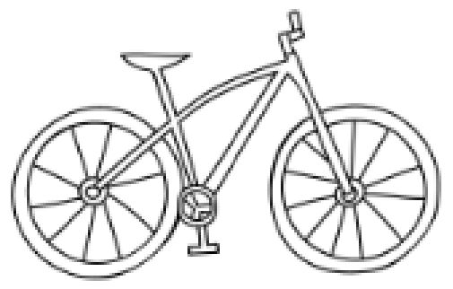

היקף מעגל
37
שאלות מתוך תוכנית הלימודים
בכפר קטן, היה ילד בשם תומר. תומר אהב לרכב על אופניו ולחקור את הטבע שסביבו. הוא החליט לצאת למסע חדש ולגלות את האזור סביב הכפר שלו.
לפני שהתחיל את המסע, הוא עמד ליד האופניים שלו והסתכל על הגלגלים. הוא תמיד תהה כיצד הגלגלים עוזרים לו לנוע במהירות ובקלות. בתור ילד סקרן, הוא החליט לבדוק את היקף אחד מהגלגלים.

תומר זכר מהמורה שלו בבית הספר למדה אותו שהגלגלים הם מעגלים, ולכן הוא יכול לחשב את ההיקף שלהם. הוא מדד את רדיוס של הגלגל וראה שהוא 30 ס״מ. תומר היה מרוצה מעבודתו.
"ההיקף של הגלגל הוא בערך ס״מ!"
במעגל שרדיוסו 1 ס״מ חסמו משושה משוכלל כפי שמתואר בסרטוט.
מהן הזוויות במשולשים שבתוך המשושה?
מהו היקף המשושה?
האם היקף המעגל גדול, קטן או שווה להיקף המשושה?
בשרטוט מתואר מסלול של משחק מכוניות המורכב מקטע ישר וממעגל.
מהו בקירוב אורכו של המסלול?
i.1.80 מ׳ii.2.5 מ׳iii.5 מ׳iv.5.80 מ׳